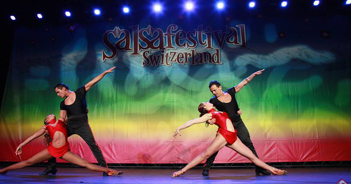
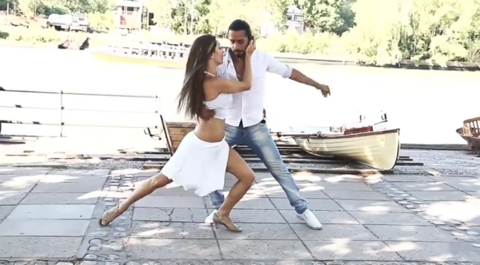

Dance Forms
There are many dance forms.Below are some of the forms that we are popular at.
Salsa
Salsa is a latin dance form that is popular in the United States.Salsa dancing originated in the Latin dance nightclubs the late nineteen seventies. Essentially, it evolved from the older dance genres of mambo and cha cha. In addition, the salsa music and dance style are smoother than the staccato style of mambo. Furthermore, some dancers execute the break step on count one while others like to break on count two. Breaking on count two is referred to as salsa on two. Currently, it is the most popular social partner dance genre in the world. However, the bachata is growing rapidly in popularity and may overtake salsa in the near future!
Bachata dance
Bachata dance styles originated in the Dominican Republic in the late 1950’s. This dance genre is danced as a three step ending in a tap on the 4th beat with Cuban hip motions. It uses different dance positions. Originally, it was similar to a bolero with slow music and mostly closed position. However, eventually it expanded to faster music and many different dance positions. It does not use as many fast turns as Salsa. There are a large number of movements for bachata dancing that can be executed in either a smooth style or with a slight hop.